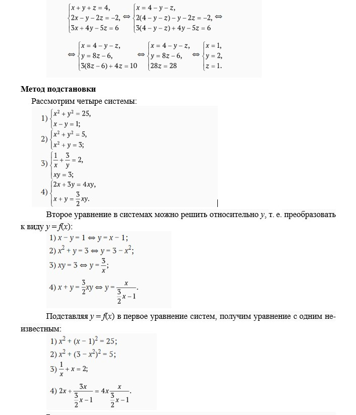
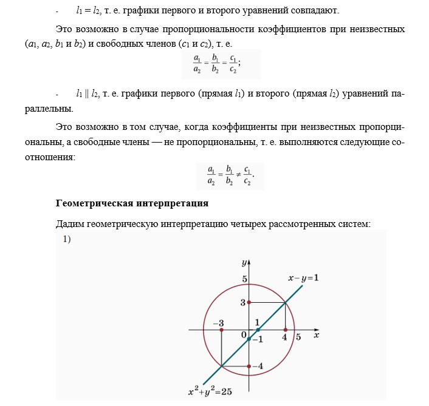

Методы решения систем уравнений
1. Метод подстановки. Системы уравнений появляются при решении задач, в которых неизвестной является не одна величина, а несколько. Эти величины связаны определенными зависимостями, которые записываются в виде уравнений. Один из основных методов решения систем — метод подстановки.
Рассмотрим, например, систему двух уравнений с двумя неизвестными x и y:

Часто удается одно уравнение преобразовать так, чтобы одно неизвестное явно выражалось как функция другого. Тогда, подставляя его во второе уравнение, получим уравнение с одним неизвестным.
Решим систему трех уравнений с тремя неизвестными методом подстановки:

2. Использование графика. Каждое из уравнений системы можно рассматривать как уравнение кривой. Поэтому решения системы двух уравнений с двумя неизвестными можно интерпретировать как координаты точек пересечения двух кривых.
3. Линейные системы. В математике и ее приложениях большую роль играют системы линейных уравнений. Любую такую систему можно решить способом подстановки. Выражая из одного уравнения системы одно неизвестное и подставляя в другие уравнения системы, мы уменьшим число уравнений и неизвестных системы, сохраняя ее линейность
4. Симметричные системы. Система уравнений называется симметричной, если она составлена из выражений, симметричных относительно неизвестных:
Что можно сказать об исследовании системы двух линейных уравнений с двумя неизвестными в общем виде?
Исследование системы двух линейных уравнений с двумя неизвестными имеет наглядный геометрический смысл.
Пусть дана система двух линейных уравнений:
График первого уравнения — прямая l1.
График первого уравнения — прямая l2.
Решением системы будет точка пересечения графиков с координатами A(x0; y0). Исключениями являются следующие случаи:
